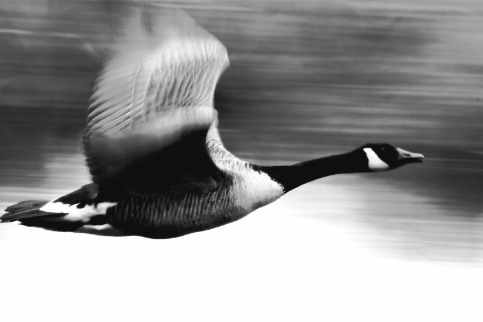
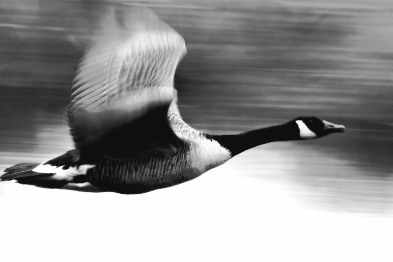
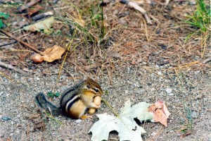
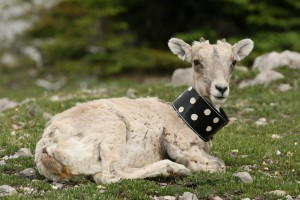
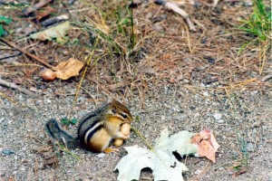
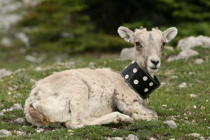

People
PhD students
- Svenja Kroeger Started fall 2013. Age dependent an age-independent senescence in Yellow-Bellied Marmot.
Master students
- Luke Venter 2015. Using UAVs (Unmanned Aerial Vehicles) to estimate wood lose in windblown forest.
Undergraduate students
- Jack Halpin 2015. Estimating personality in fulmars.
- Meldrum Ryan 2015. Using UAVs (Unmanned Aerial Vehicles) to estimate spatial and social structure in harbour seals.
- Robertson Isla 2015. Disturbance of harbour seals when using UAVs (Unmanned Aerial Vehicles).
Former students
MSc project
- Timothee Fouqueray* 2013. UCLA. Maternal effects and litter composition in yellow-bellied marmots.
Honours project
- Nguyen Kathy* (UCLA, USA) 2012. Ontogeny of alarm calls in yellow-bellied marmots


 


 


